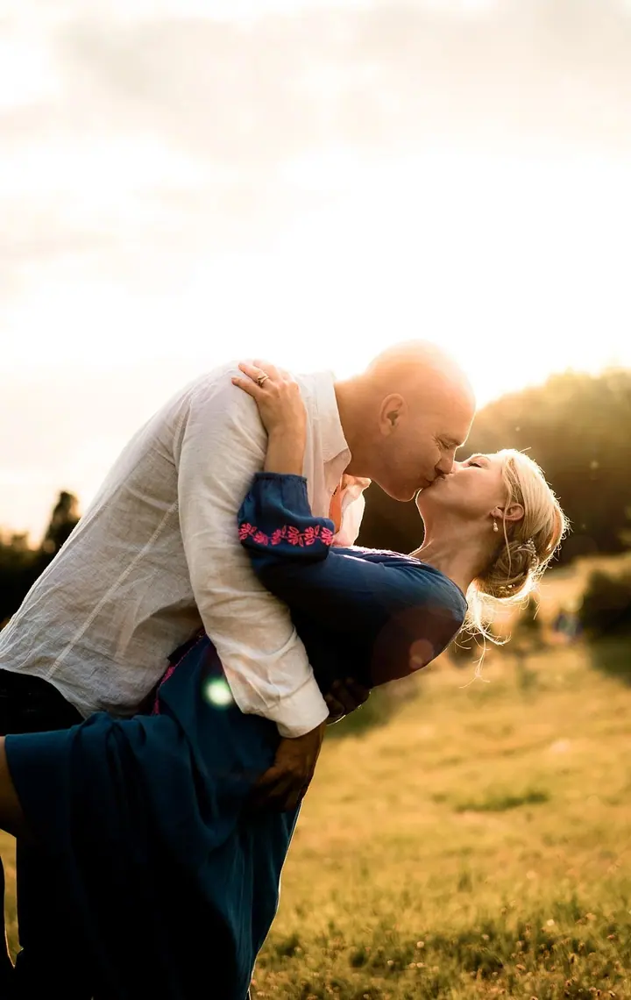
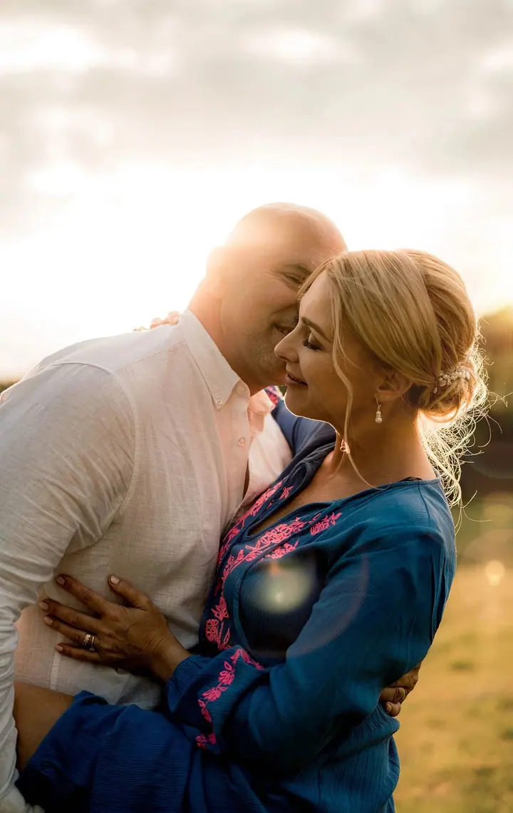

Rodinné focení
Fotím hlavně přirozené fotky a k nim pár aranžovaných pro rodiče. Pomůžu vám sladit oblečení. Nejraději fotím venku, s malým miminkem klidně u vás doma.

Jmenuji se Maria Beláková, ale klidně mi říkejte Mája. Jsem lifestylová a portrétní fotografka z Chomutovska. Fotím rodiny, páry i úplně malá miminka, nejčastěji v Praze…
Rezervovat termínJsem Mája, lifestylová a portrétní fotografka z Chomutovska. Nejčastěji mě potkáte v Praze, kde jsem léta žila, a v okolí Klášterce nad Ohří. Fotím ale všude, kde mě chtějí, v Čechách i v zahraničí.


Sama jsem focení ráda neměla, nejspíš kvůli portrétům ze školy a školky. Proto se snažím, aby bylo focení se mnou příjemné. Předem se vás zeptám, co máte rádi, a děti fotím hlavně hrou, venku nebo u vás doma.
Nejraději fotím v přírodě, ideálně chvíli před západem slunce. Úplně nejvíc miluji zimní focení v Krušných horách. Když je potřeba, zajistím ateliér, make-up artistku i šaty k focení.
Co fotím
Fotím hlavně přirozené fotky a k nim pár aranžovaných pro rodiče. Pomůžu vám sladit oblečení. Nejraději fotím venku, s malým miminkem klidně u vás doma.
Focení ve dvou venku, nejlépe chvíli před západem slunce. Místo vybereme spolu, v Praze i v okolí Klášterce nad Ohří je kde fotit.
Fotím svatby na Chomutovsku, v Praze i jinde v Čechách. Mám pro vás svatební ceník a ráda s vámi vyrazím i na svatbu do zahraničí.
Fotím v klidu u vás doma, podle rytmu vás i miminka. Přivezu plédy i oblečení. Po domluvě fotím i v porodnici (Fresh 48).
Postup
Napíšete mi a já se vás vyptám, co máte rádi a jak si focení představujete. Provedu vás vším od první zprávy až po dodání fotek.
Poradím vám s oblečením, na fotkách krásně vypadají zemité barvy. Vybereme místo venku, u vás doma nebo v ateliéru.
Fotíme v klidu a bez stresu, ideálně v přirozeném světle před západem slunce. Děti fotím hrou, aby je to bavilo.
Fotky pečlivě upravím a pošlu vám je. Zůstane vám vzpomínka, ke které se budete vracet.
Otázky
Nejčastěji fotím mezi 33. a 36. týdnem, kdy je bříško hezky kulaté a focení se dobře zvládá. Ozvěte se mi zhruba ve 30. týdnu a termín si naplánujeme.
Hodí se zemité barvy, tedy hnědá, žlutá, zelená, cihlová a modrá. Vyhněte se potiskům a křiklavým barvám, odvádějí pozornost. K focení můžu nabídnout i šaty.
Nejkrásnější fotky vznikají venku v přirozeném světle, a to v kterémkoli ročním období. Když je potřeba, zajistím ateliér v Praze. S malým miminkem fotím u vás doma.
Ano, po domluvě fotím Fresh 48 v porodnici, obvykle den před propuštěním. Když to po porodu nepůjde, vyfotím vás doma, nejlépe do 10 dnů po porodu.